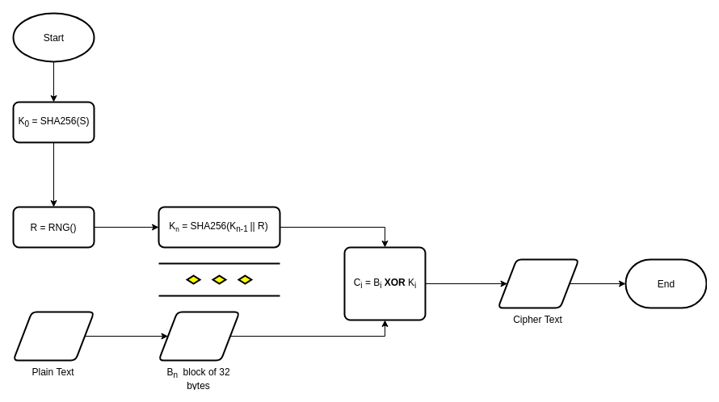

Onward in XOR cipher
Long time ago, I had readed this article Unbreakable Cryptography in 5 Minutes. I've realized XOR Cipher is secure as long as key length equal or greater than data length. It's sound stupid where data is fucking big but what if we could generate the key deterministically.
Hash function
Hash function is some kind of deterministic algorithm, it's always giving the same result for the same input. And you could repeating hash function on itself result to get new digest, it won't repeat by sequence.
Proposing a method to generate infinity key length
